半自动生成Live2D面捕虚拟形象，并成为“虚拟主播”
前言：2024年做小九的游戏时，实在太想拿奖了，愣是速学了live2D。无奈缺乏技术与艺术的双重积淀，这样的模型只能用来做丝滑小动画，不能用于当Vtuber。
本文介绍一种低成本（宽松点儿就是零成本）的方案，让不会Live2D建模的人、甚至不会画画的人，只需要有电脑就可以实现成为拥有自己虚拟形象的虚拟主播。
项目地址：https://github.com/lTwTlol/Auto_Vtb_beta
预言一下以后会有人把自动生成Live2D流程做成skill，哈哈。
生成立绘
这里用的免费豆包。拿出2023年画的oc设定图，生成了一个立绘，还行。我这里属于是图生图（原图自己画的）。我的提示词：
1 | 用日漫美少女画风，画这个动漫小人，Apose，耳朵等细节元素不要删除。背景需要为空，这样我后面可以拆解成live2D模型 |
这个提示词并不算很好，缺乏细节。不过我会给自己下提示词，不用担心。如果AI玩的好，你完全可以把这篇博客标题中的“半自动”演绎成“自动”。
设计提示词的要点：
- 正面图，A-Pose（防止奇奇怪怪的角度）
- 要求嘴巴和眼睛都张开
- 二次元画风指定（2.5次元画风或者三次元画风，恐怕会有欢乐谷效应吧）
分层
作者在PSD分层说明文档里里清晰地写到分层和命名方法，需要按照表格里面命名，线稿、光效也需要和底色合并在一起。最后导出psd后缀的分层文件。
这里，我花了大量精力研究如何安装ComfyUI节点和使用Seethrough，无奈电脑显存不足，即使用了作者介绍的“最后手段”，还是爆显存。所以能工智人发力了，用画世界和PhotoShop进行了手工分层。
理论上可以用ChatGPT拆解部件，改天试试再写。
Seethrough分层的ComfyUI安装
电脑有一个好的显卡，并且显存在12GB以上再这么玩儿。至于这里我和AI一直在释放组合技，才组装好的ComfyUI节点和模型，结果最后电脑显卡力气小，只好放弃了这一方案。
修图/绘画软件手工分层的技巧
首先需要研读一下PSD分层说明文档。（点击链接，读）
像我这样的懒人，是这样手动分层的：
- 开对称，描一边圆圆的头
- 描头发：前发（刘海），呆毛，后发（后发和辫子），侧发，并涂一下前后发衔接的一块儿，到时候合并到头的图层里。
- 眼睛嘴巴：开对称，描一边。注意睫毛要和眼珠分开，睫毛不要描下眼线，嘴巴要张开。牙齿和舌头可以单做一图层（到时候会蒙版）。眼睛部件左右不用特意分开，软件会自动分。
- 切身体：一气呵成，剪切成上身（不包括胳膊）、裙子、两手臂、两腿、鞋子。其中短裙剪切完往上拉伸一下（或者说液化），这样垫在上衣底下衔接腰不会断（
芙兰)(达），腿同理，分别向上向下液化一下。 - 其它装饰品：切出来或者描出来。
毕竟玩儿呢，要是真要细节，必须得找人类画师、拆分师和建模师哦。
我使用画世界进行基础分层（有笔比较顺手），用PhotoShop进行重命名和图层合并（有键盘顺手），看个人习惯。
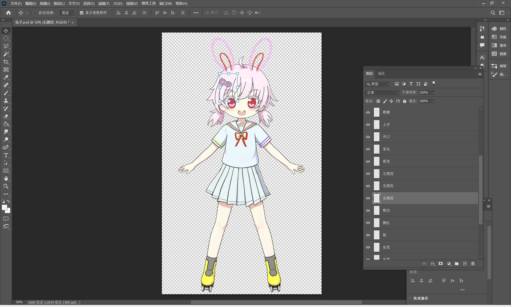
Auto Vtb生成模型
从下载页面下载最新版的zip，解压，点击Auto_Vtb.exe开箱即用。导入分层好的psd，稍等几秒。
很简单，参数都是字面意思上的，稍微调两下数值就可以。
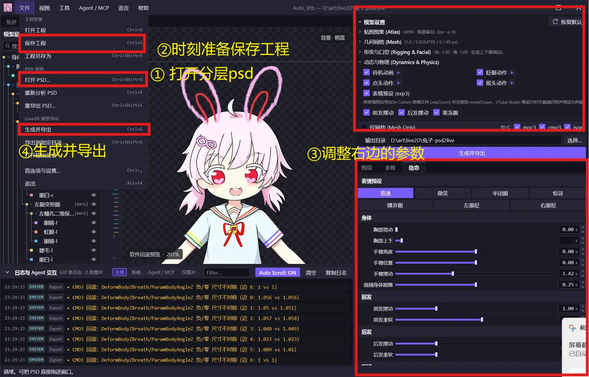
例如可以改变嘴部形状 （^ω^）
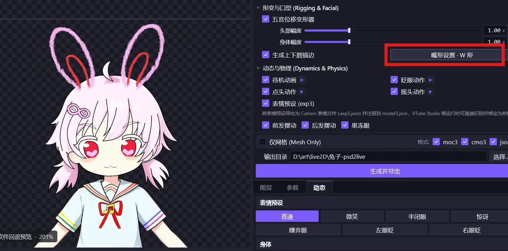
Vtube Studio动作捕捉软件设置
这个软件是免费的，从steam上面下载。
只提一下关键步骤，首先先看一下左边栏的功能，这三个按钮等一下用
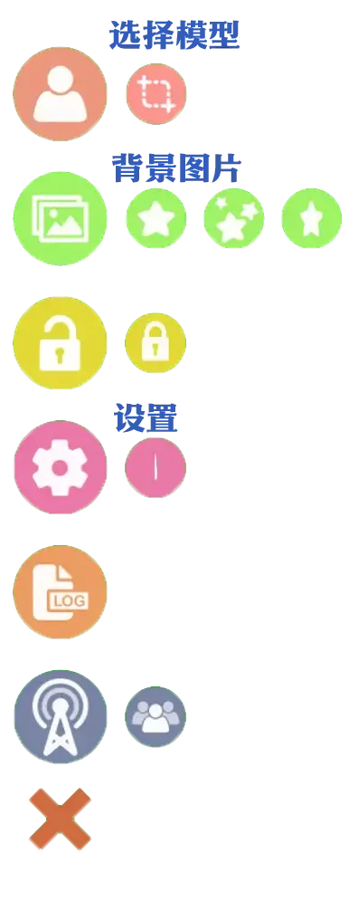
导入模型
点击左边栏的“选择模型”圆按钮，接下来导入模型。
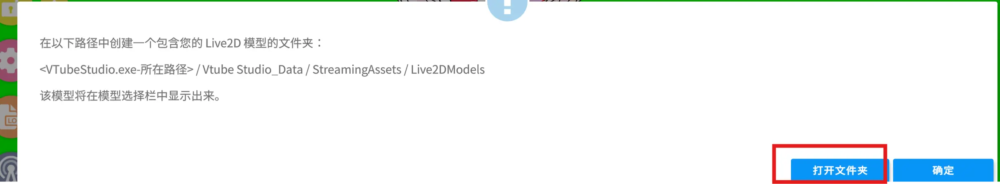
把生成模型的文件夹都放到这个指定的文件夹里。
换纯色背景
点击左边栏的“背景图片”圆按钮，接下来改成绿幕或者别的颜色的背景（哔哩哔哩直播姬疑似不支持透明串流）。
点击ColorPicker
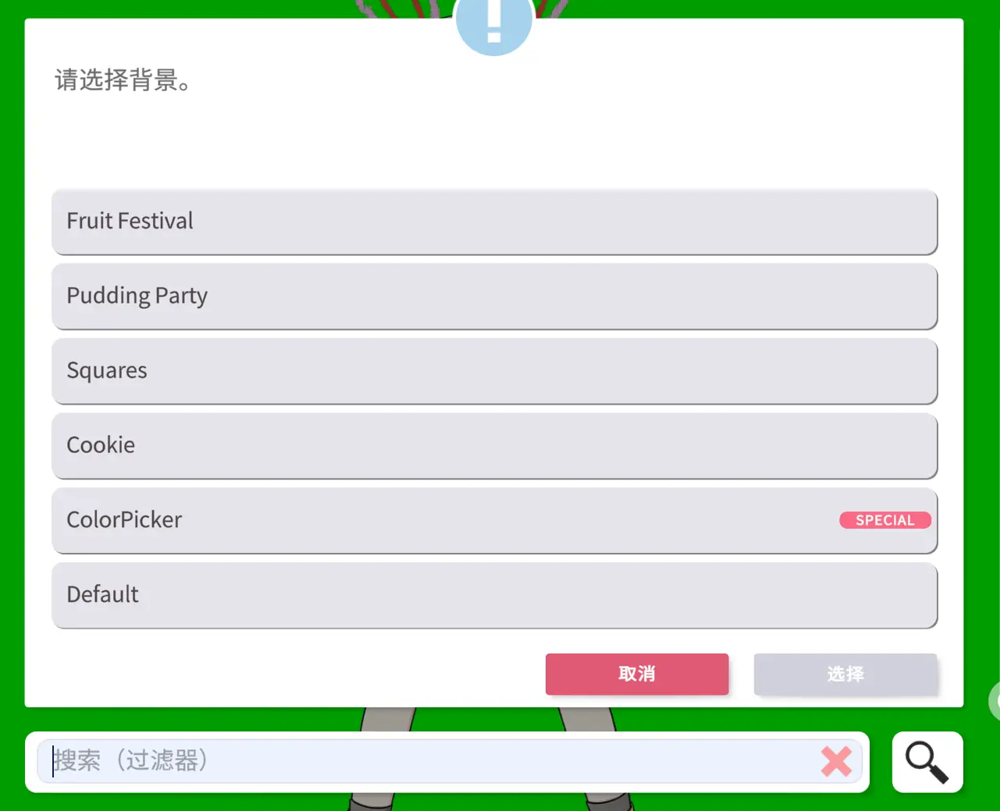
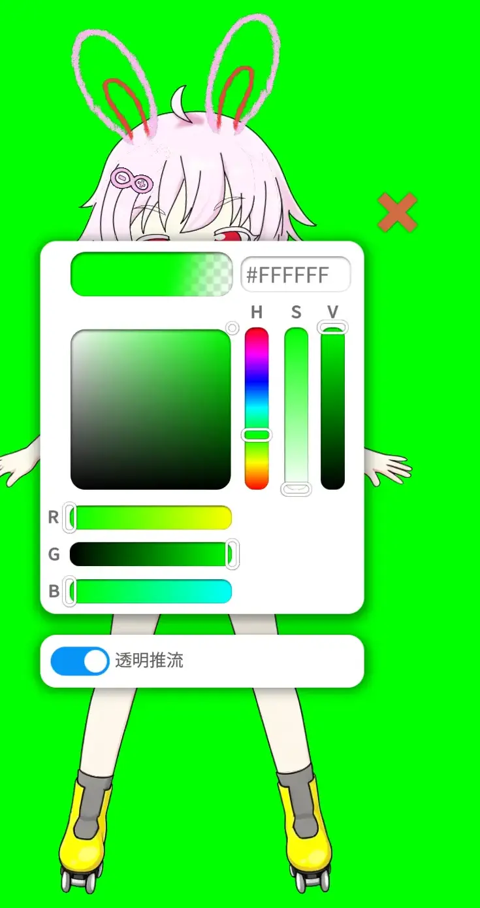
面部捕捉和虚拟摄像头
打开面捕，正襟危坐并矫正。
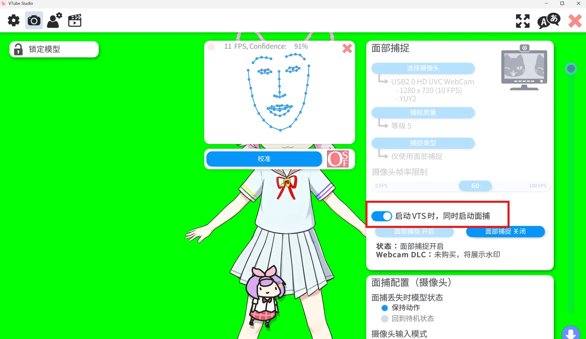
找到虚拟摄像头并激活
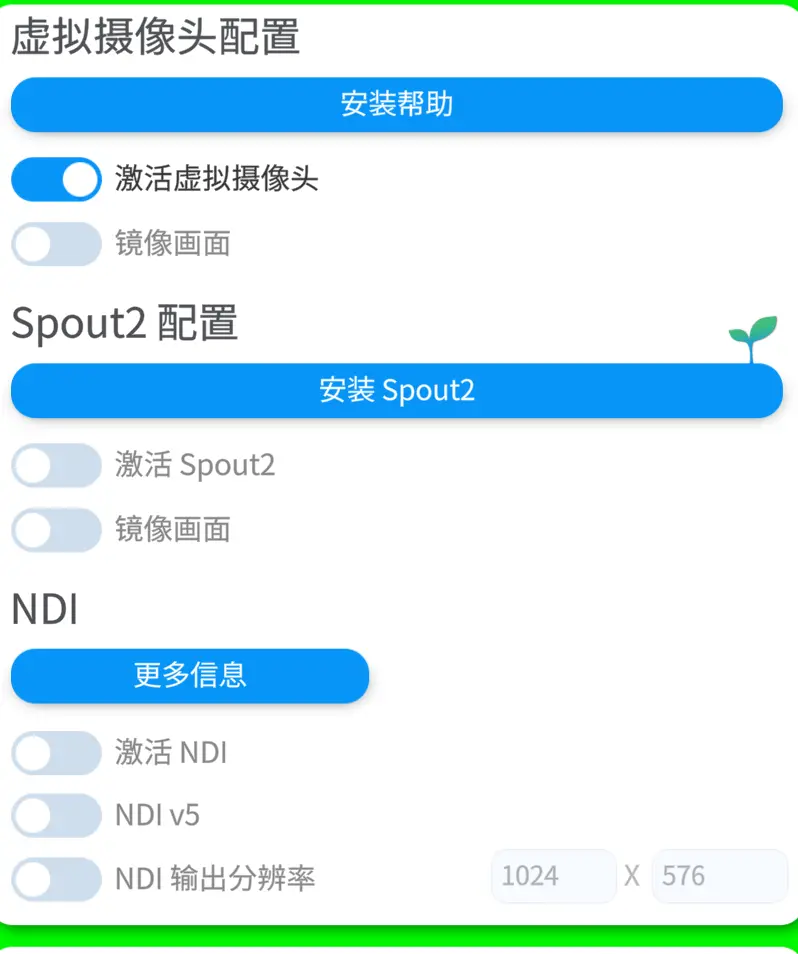
Bilibili直播姬设置
以B站直播为例。
下载bilibili直播姬，添加素材。
Vtube Studio不要关。翻到下面，左下角有一个虚拟摄像机
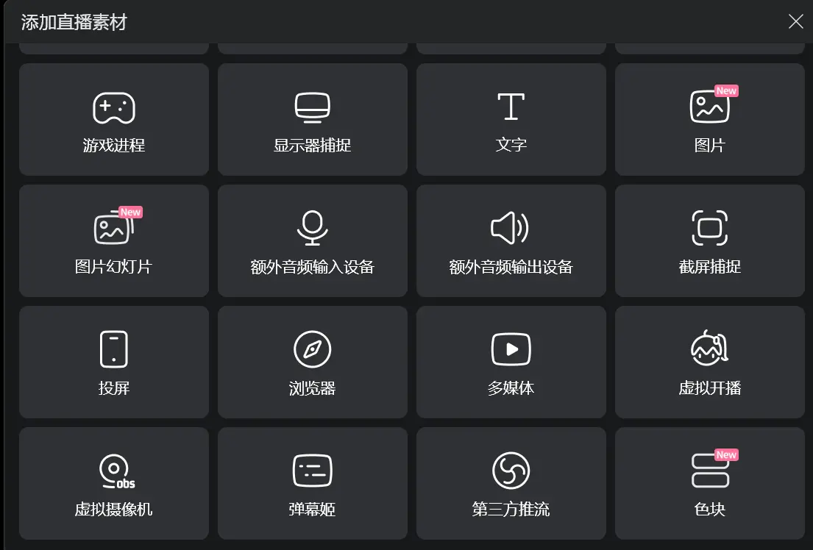
点击省略号后，点击编辑
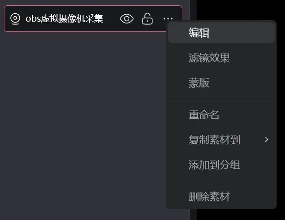
摄像头下拉框选择VTubeStudioCam
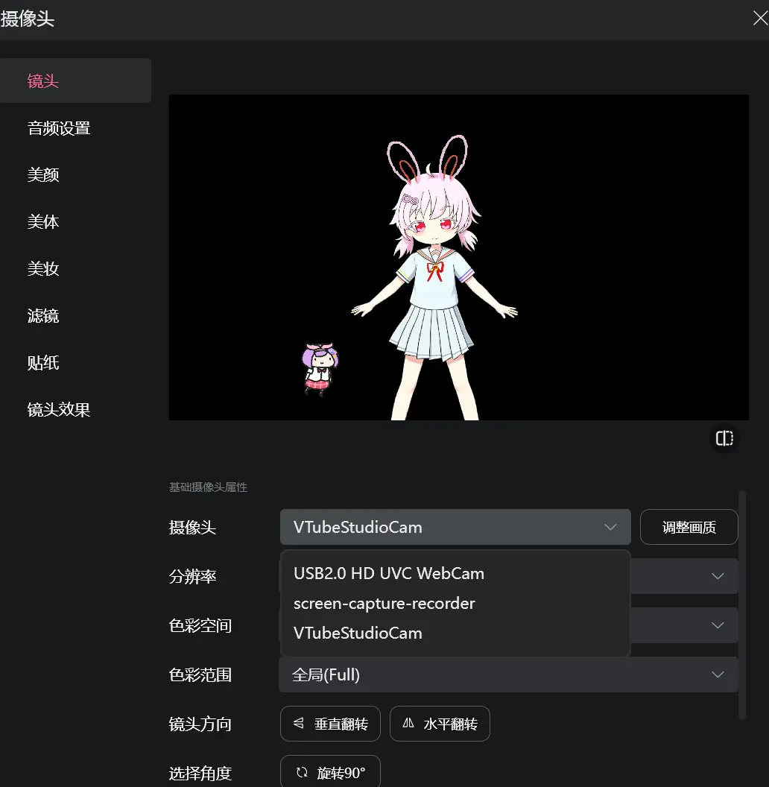
开启背景扣除，颜色选择刚刚你在Vtube Studio里选择的颜色，调整一下参数即可。
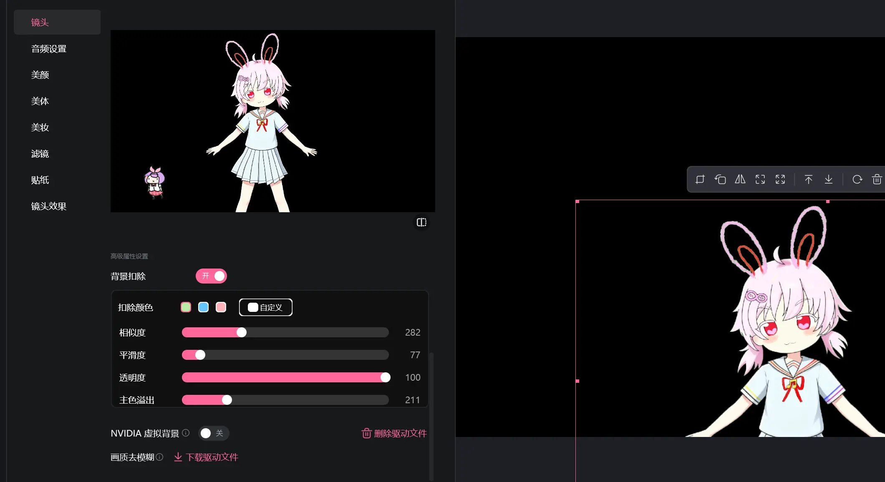
然后你就可以加别的素材，上下拖动调整展示顺序就好啦！
下面那个飞来飞去的紫发小人儿是Vtube Studio的水印吉祥物，要付费删除。如果你不想展示出来，就在Vtube Studio和哔哩哔哩直播姬里调一下位置大小。
碎碎念：都6202年了，我竟然还纯手动敲博客，实在是传统手艺。